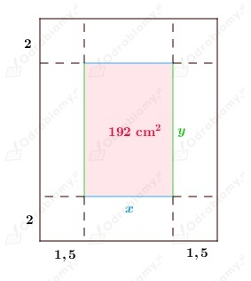

Niech x, y będą długościami boków prostokąta.
Z treści zadania wiemy, że:
zatem:
założenia:
Należy wyznaczyć wymiary prostokąta spełniającego warunki zadania, którego obwód jest najmniejszy.
Obwód prostokąta jest dany wzorem:
Zapisujemy wzór funkcji opisującej obwód prostokąta w zależności od boku x:
Obliczmy pochodną funkcji O:
Wyznaczamy miejsca zerowe funkcji O':
Rozwiązujemy równanie:
Zauważamy, że:
Funkcja O osiąga minimum w punkcie x=5√2.
Minimum jest dla funkcji O wartością najmniejszą.
Wobec tego najmniejszy obwód z prostokątów o polu 50 cm2 ma prostokąt o wymiarach:
Odp: Szukany prostokąt jest kwadratem o boku długości 5√2 cm.
Przyjmijmy oznaczenia jak na rysunku poniżej:

Wymiary kartki to:
Pole zadrukowanej części wynosi 192 cm2, a więc:
założenia:
Należy wymiary kartki, aby jej pole powierzchni było najmniejsze.
Zapisujemy wzór funkcji opisujące pole kartki w zależności od zmiennej x:
Obliczmy pochodną funkcji P:
Wyznaczamy miejsca zerowe funkcji P':
Rozwiązujemy równanie:
Zauważmy, że:
Funkcja P osiąga minimum w punkcie x=12.
Minimum jest dla funkcji P również wartością najmniejszą.
Wobec tego pole kartki jest najmniejsze, gdy:
Zatem wymiary kartki wynoszą:
Odp: Kartka powinna mieć wymiary 15 cm x 20 cm.
Z treści zadania i z rysunku wiemy, że prostokąt o bokach
długości x i y jest wpisany w okrąg o średnicy 12 cm.
Zatem:
założenia:
Szukamy wymiarów prostokąta, aby iloczyn xy2 miał najmniejszą wartość.
Wykorzystując twierdzenie Pitagorasa dostajemy:
Zatem iloczyn ma postać:
Zapisujemy wzór funkcji opisującej dany iloczyn w zależności od wartości x:
Wyznaczamy pochodną funkcji f:
Wyznaczamy miejsca zerowe funkcji f':
Rozwiązujemy równanie:
Zauważmy, że:
Funkcja f osiąga maksimum w punkcie x=4√3.
Maksimum jest dla funkcji f również wartością największą.
Wobec tego iloczyn jest największy, gdy:
oraz
Odp: Wymiary prostokąta spełniającego warunki zadania, to:
Dokończenie rozwiązania z ramki znajdującej się pod treścią zadania.
Wyznaczamy miejsca zerowe funkcji k':
Rozwiązujemy równanie:
Zauważmy, że:
Funkcja k osiąga minimum w punkcie x=20.
Wobec tego plac powinien mieć wymiary:
Odp: Wymiary placu spełniającego warunki zadania, to: 20 m x 8 m, gdzie 8 m, to długość ściany z cegły.
Niech x - krawędź podstawy graniastosłupa prawidłowego czworokątnego, y - wysokość graniastosłupa.
Objętość graniastosłupa prawidłowego czworokątnego o podanych wymiarach jest dana wzorem:
Z treści zadania wiemy, że:
Wiemy, że:
Wobec tego:
założenia:
Z treści zadania wiemy, że materiał na dolną podstawę kosztuje 200 zł/m2, natomiast
materiał na górna podstawę i ściany boczne kosztuje 100 zł/m2.
Koszt materiału na dolną podstawę, to:
Koszt materiału na ściany boczne:
Koszt materiału na górną podstawę:
Możemy zapisać koszt budowy graniastosłupa spełniającego warunki zadania za pomocą wyrażenia:
Zapisujemy wzór funkcji opisującej koszt budowy graniastosłupa w zależności od zmiennej x:
Obliczmy pochodną funkcji f:
Wyznaczamy miejsca zerowe funkcji f':
Rozwiązujemy równanie:
Zauważamy, że:
Funkcja f osiąga minimum w punkcie x=0,4.
Wobec tego:
Wymiary pudełka spełniającego warunki zadania, którego koszt wykonania jest najmniejszy:
Obliczamy jaki będzie koszt wykonania takiego pudełka:
Koszt dolnej podstawy to:
Koszt ścian bocznych:
Koszt górnej podstawy:
Wobec tego całkowity koszt pudełka wynosi:
Odp: Wysokość pudełka powinna wynosić 6 dm, natomiast krawędź podstawy powinna mieć długość 4 dm.
Koszt całkowity budowy pudełka wynosi 144 zł.